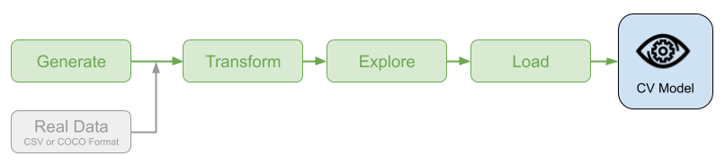
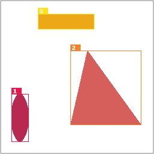

Welcome to SquiDS
The main goal of this project is to help data scientists working with Computer Vision (CV) domain better manage synthetic and real training data. This project will be useful in building machine learning (ML) models for:
- image classification;
- objects detection/localisation;
- objects segmentation.
Installation
To install SquiDS, run the following command from the command line:
Why use it?
If you are working in the computer vision domain, you may encounter situations when you are spending more time preparing data rather than creating, training, and testing models. The developed SquiDS package is intended to minimize the data preparation process so you can focus on the task which is matter.
Key Capabilities

- Generate synthetic dataset in CSV and COCO formats;
- Transform dataset in either format to TFRecords;
- Explore content of generated TFRecords;
- Load TFRecords for machine learning model training.
Usage
Import SquiDS library.
Generate synthetic dataset in CSV format (by default, data are stored in the dataset/synthetic directory).
Transform dataset to TFRecords (by default, TFRecords are stored in the dataset/synthetic-tfrecords directory).
Explore generated TFRecords for model training (located at the dataset/synthetic-tfrecords/instances_train directory).
dataset/synthetic-tfrecords/instances_train
725 {1} 921 {1} 485 {1, 3} 686 {1, 2} 166 {1}
726 {2} 922 {1, 2, 3} 486 {3} 687 {1} 167 {3}
727 {3} 923 {2} 488 {1, 2} 688 {1, 3} 168 {1}
728 {2, 3} 924 {2} 489 {2, 3} 689 {1, 2} 169 {2}
729 {1, 2} 925 {3} 490 {2, 3} 690 {1, 3} 172 {1}
730 {3} 926 {2, 3} 491 {3} 692 {2} 173 {1, 3}
... ... ... ... ...
Total 712 records
The output shows the total number of records, a list of images IDs combined with annotated categories. For example, the following line 922 {1,2,3} indicates that the image with ID 922 has one or more objects of the category 1, one or more objects of the category 2, and one or more objects of the category 3 respectively.
Explore a content of a TFRecord record with the image ID 922.
sds.explore_tfrecords(
"dataset/synthetic-tfrecords/instances_train",
922,
with_categories=True,
with_bboxes=True,
with_segmentations=True
)
Property Value
-------------------- ----------
image_id 922
image_size (256, 256)
number_of_objects 3
available_categories {1, 2, 3}
Image saved to ./922.png
The output contains information about image ID, its size, number of annotated objects, and their categories. Also, all information about bounding boxes, segmentation, and categories are overlaid to an image (stored in the 922.png file).

Load TFRecords for model training and validation.
ds_train, train_steps_per_epoch = sds.load_tfrecords(
"dataset/synthetic-tfrecords/instances_train",
output_schema = "C"
)
ds_val, val_steps_per_epoch = sds.load_tfrecords(
"dataset/synthetic-tfrecords/instances_val",
output_schema = "C"
)
Note
The output_schema="C" argument instructs the data generator to return one-hot categories encoding.
Run the model training.
model = ...
model.compile(...)
model.fit(
ds_train,
steps_per_epoch = train_steps_per_epoch,
validation_data=ds_val,
validation_steps = val_steps_per_epoch,
...
)
Examples
To learn more about SquiDS, look at the following examples showing different scenarios of using this package.